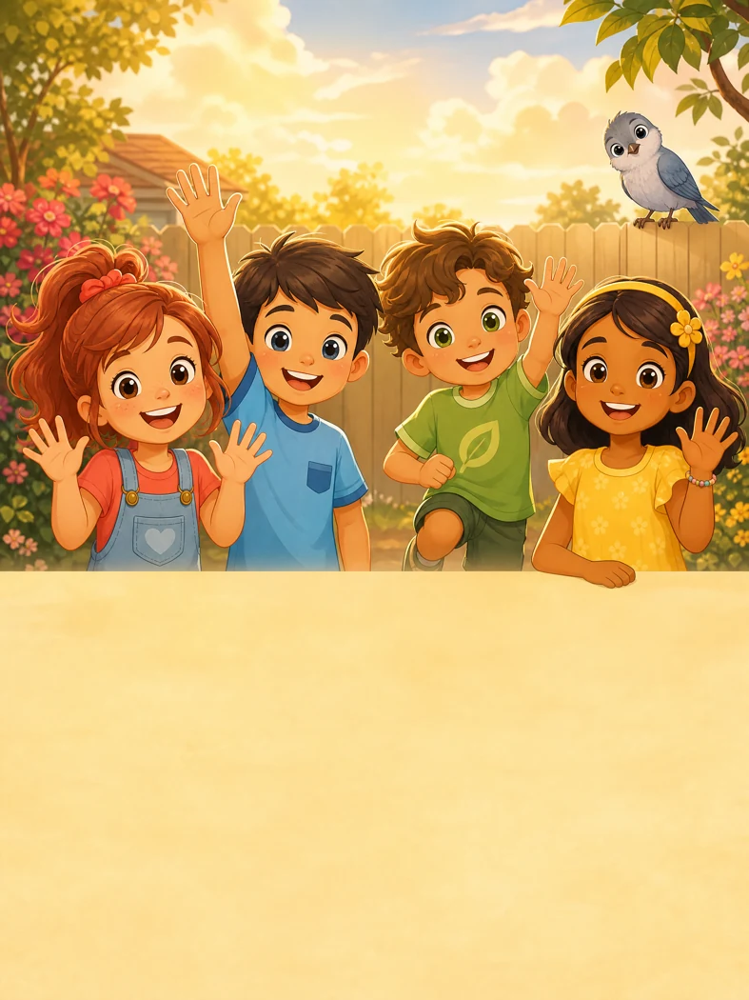
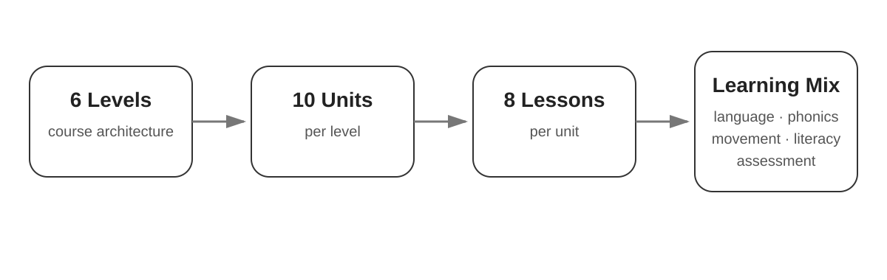
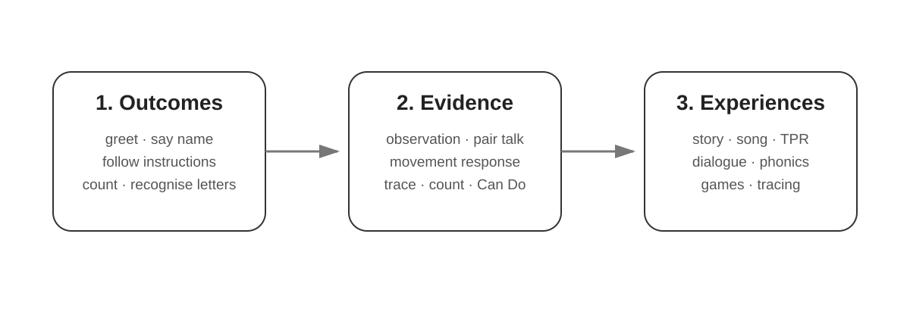
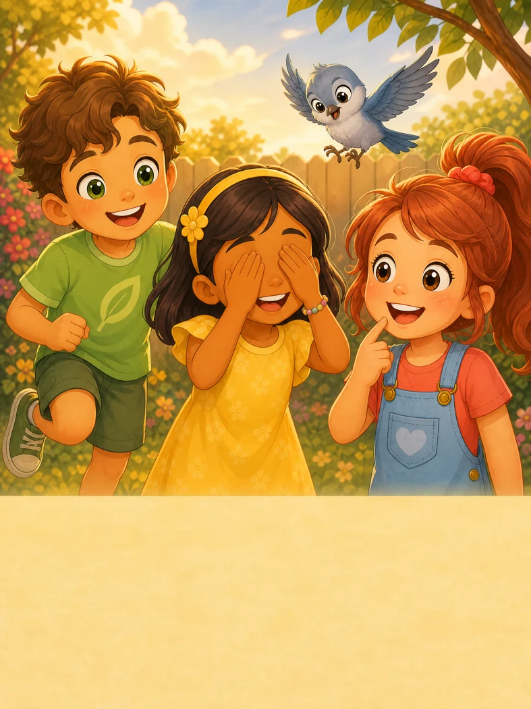

1. Outcomes
Greet and say goodbye, exchange names, follow familiar actions, count 1–5 and recognise the taught letters.
Learning experience and curriculum design for young English learners.
Bright Starts is a six-level English course for children. Unit 1 is designed for learners who may be new to English and still developing pencil control. Short cycles of listening, looking, speaking and movement give children more than one way to take part. Predictable routines, frequent retrieval and visual support help children move towards speaking, reading and writing. Australian English provides a consistent editorial and audio base while everyday classroom and play contexts remain broadly familiar.

I designed a structure of 10 units per level and eight lessons per unit. The Level 1 sequence moves from greetings, names and classroom routines towards cumulative word reading, spelling and supported writing. Unit 1 introduces numbers 1–5, four sound–letter correspondences and foundational tracing. Later units revisit language and letter sounds with increasing independence. First exposure to all 26 letters is planned by the end of Unit 6.

Learners work towards greeting someone, asking a name, answering and saying goodbye. I planned evidence around a familiar partner exchange before selecting practice activities that prepare children for it.
Greet and say goodbye, exchange names, follow familiar actions, count 1–5 and recognise the taught letters.
Teacher observation, pair talk, movement response, picture identification, counting, tracing and Can Do reflection.
Story, song, physical actions, partner dialogue, phonics practice and visual games.

In Lesson 3, children listen to Mia and Leo ask each other’s names, point to the speakers, rehearse by role and sequence a second conversation. They then practise with a partner and make a name card to support their introduction. In Lesson 8, the teacher observes the familiar exchange alongside short action, counting and letter tasks, and records the support each learner needed.
View selected Unit 1 design evidenceUnit 1 introduces l, t, i, s. The early forms use short strokes, and s adds a controlled curve. The teacher draws attention to the visual difference between tall l and dotted i. The taught sounds let the teacher model blending and segmenting sit, a word children already understand from movement routines. Children may join as they’re ready. Unit 2 adds new correspondences and extends the word bank.

The 24-page Student Book, 14-page Activity Book, Teacher’s Book, assessment and 18 track scripts use the same lesson sequence. Scripts include General Australian English guidance, response pauses and story cues. Page-specific art direction stays with its Student Book page. Approved visuals guide recurring-character identity. AI assisted drafting, consolidation and cross-file review, with the curriculum package providing editorial controls. Pilot feedback will guide later revisions.